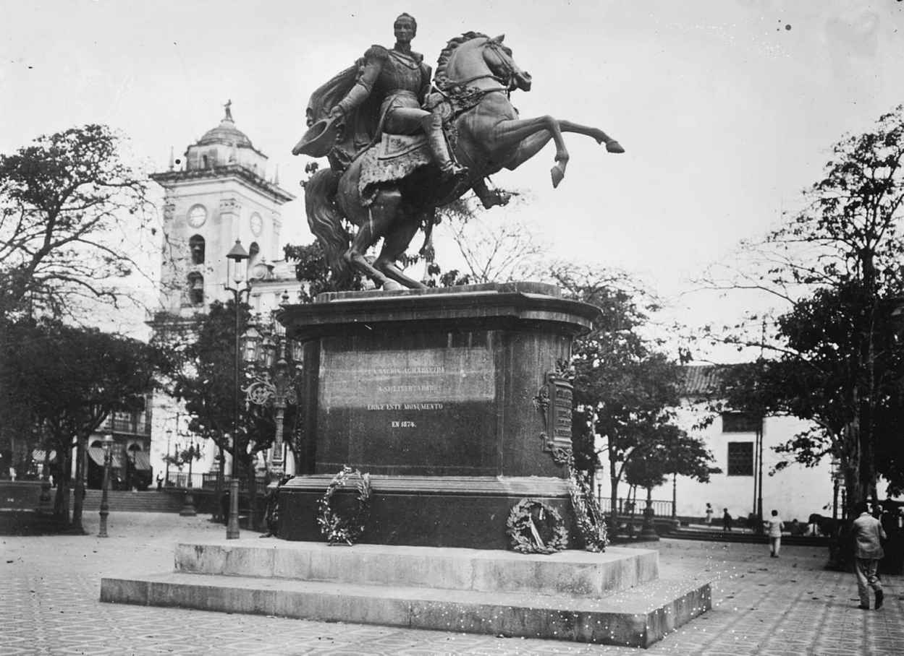
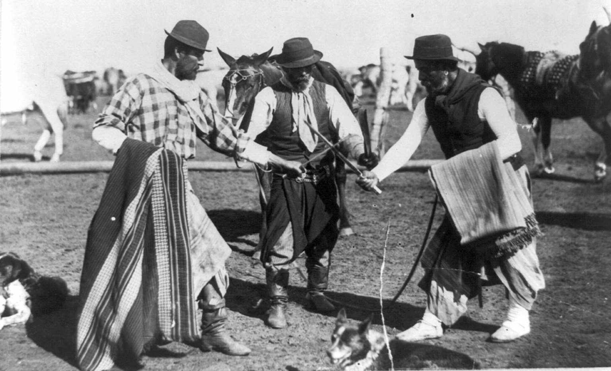

在总督区，尽管诗歌较为盛行，记录了发现和征服的纪事文学仍然以其数量、规模和影响力主导着殖民地文学的全貌。然而纵观19世纪，在拉丁美洲启蒙运动中独占鳌头的文学体裁还要数描写和分析性的散文，即使它会以短篇或长篇小说的形式出现。比起诗歌，散文更易描述政治发展，而整个19世纪正是拉丁美洲各国纷纷寻求独立的时期。政治书写正是一项重要的尝试，其中包括关于创立新制度的论战、书信，甚至是宪法的起草及其他法律法规的制定，这种书写对新大陆后来的文学创作走向影响颇深。
影响拉丁美洲文学的另一种创作模式，得益于新兴的社会科学——社会学、犯罪学，尤其是人类学。拉丁美洲的社会科学常常参考了许多欧洲科学旅行者的著作，他们往来于拉丁美洲，用大量篇幅对拉丁美洲的动植物、地理环境和人口结构进行了细致的描绘。其中最著名的是亚历山大·冯·洪堡，他对新国度的发展起到了举足轻重的作用。19世纪拉丁美洲的文学作品很难用一般意义上的方法加以区分，政治宣言、社会学小册子、人类学研究、公共演讲、随笔、报刊纪事和社会速写等应有尽有，不一而足。
叙事文学（甚至小说）是特定时期历史的缩影，这同时也促使作家回归对本源的探索：我们栖居的世界，究竟是从何时开始的？在殖民地纪事文学中，人们普遍将地理大发现视作基督诞生后西方历史中最为重要的转折点。巴托洛梅·德·拉斯卡萨斯神父持相似观点，他认为，阿兹特克人和印加人在人类历史进程中与罗马人地位相当。这一观点为印加作家加尔西拉索·德·拉·维加所效仿，在其著作《王家评述》中他提到，库斯科和墨西哥城与罗马是如此相像，它们是伟大文明的中心，与欧洲的差别仅仅在于基督教的缺位。到了19世纪，科学家已经通过化石的发现和研究证明，时间可以无限追溯至宇宙起源，这使得历史有了更久远的过去。在各国纷纷独立、打开全新政治格局的背景下，美洲的历史须得用一种全新的方式去书写。
贝略的学生之一，解放者西蒙·玻利瓦尔（委内瑞拉人，1783—1830）站在构想美洲国家未来的高度，率先进行了本土文化身份的反思与重构。他发表了著名信件《牙买加来信》（1815）。其时，这位解放者在圣玛尔塔围城行动遭到反对后被迫前往牙买加避难，在那里，他向“岛国的绅士”（很可能即英国统治者）写就了这篇长信，采用了传统的正式书信的形式。这种巧妙的形式使得他仿佛在与一位有修养的收信人“对话”，他从根本上论述了拉丁美洲的现状与未来。他说明了拉丁美洲独立战争的正确性，声讨了君主制、联邦制和所谓民主，表明了关于建立一个大哥伦比亚共和国的计划，其中包括新格拉纳达（今哥伦比亚）和委内瑞拉。他想要建立一个大国，并定都巴拿马地峡；鉴于地峡优越的地理位置（横跨大西洋和太平洋），他甚至遥想了其最终成为世界中心的可能性。
玻利瓦尔提到的一系列内容，展现出一种与贝略类似的、新古典主义教育和浪漫主义倾向的融合。他提到或引用拉斯卡萨斯神父、亚历山大·冯·洪堡、卢梭、孟德斯鸠和圣比埃 [10] ，对法国启蒙运动思想家提出的各种国家形式都有思考。然而，玻利瓦尔同时宣称，这些代议制的政府形式对于刚刚摆脱西班牙帝国殖民枷锁的拉丁美洲而言或许并不合适，殖民的毒瘤就像“黑色传奇” [11] 的阴影一般难以驱散。关于崛起中的拉丁美洲，玻利瓦尔有一段最常为后人引用的论述，其中着力强调了拉丁美洲在历史、地理和自然方面的独特性：
玻利瓦尔点明的这种身份困扰，也成了多数拉丁美洲文学的新起点：如何用不同的方式将欧洲人的积淀用于自身，如何平衡拉丁美洲的现实与欧洲的思维方式（前者由后者中挣脱，甚至与后者相冲突），以及如何将这些关注诉诸笔端。
“文明”（欧洲）与“野蛮”（美洲）的交锋，将成为这一时期拉丁美洲文学论战的核心。走在最前面的是作家多明戈·福斯蒂诺·萨米恩托。同玻利瓦尔一样，他不是旁观者，而是新世界构建事业的热心参与者。而另一些作家，如何塞·马蒂和何塞·恩里克·罗多（1872—1917），将继续这场论战，并将其延伸至小说，甚至诗歌创作中（比如埃斯特万·埃切维里亚选择用长篇叙事诗《女俘》进行阐释）。
如何更好地用文字展现拉丁美洲现实的独特性这一宏大问题，自此主导了拉丁美洲文学；文坛刮起一股现实主义风潮，这就需要作家对地理、文化和人口背景的描述尽量精准和翔实。科学研究笔记的丰富、社会科学研究方法的兴起、文学和艺术中现实主义修辞手法和创作技巧的日臻成熟，使这一切成为可能。
现实主义的一个重要分支风俗主义 将风靡拉丁美洲，正是因为该流派将描绘和展现民风及民俗（尤其是城市边缘人群的生活状态）视为第一要义。
风俗主义源于对普通人及自然方方面面的浪漫主义兴趣和现实主义传统的结合，这一现实主义传统可追溯到西班牙作家塞万提斯。风俗主义倾向于使用短小精辟的描述性文字，这一技巧也被称作“风俗油画”；新闻报刊业的发展也推动了风俗主义的盛行。“风俗油画”这一别称阐明了风俗主义与油画的相似性，主张“以文字作画”。“风俗”即文化习俗，因此风俗主义关注传统习惯和民间活动，作品中常有对民间手艺和贸易活动的描写。这些风俗因具有地方特色而被大肆描摹；书中人物常常为农民、工人或居住在城市贫穷区域的普通人；而作者或目标读者群体则来自社会中上层，即中产阶层或更高阶层。

图4 西蒙·玻利瓦尔的青铜像，委内瑞拉首都加拉加斯
风俗主义作品的主人公往往形象很多彩（有时他们就是“有色人种”），他们的行为及活动的背景非常生动。风俗主义作家不仅将目光聚焦在人物的行动上，更着意描写人物的穿着打扮、劳作工具、家畜牲口，以及他们的世界中其他的特有物件。风俗主义就像是现实世界的翔实描摹画和原始民族志。
19世纪，尽管并非所有拉丁美洲作家都以风俗主义手法进行创作，这场文学运动的基本信条却主导了散文小说以及阐释新国家的社会和自然特征的文字创作。在这一时期的一些重要作品（无论是短篇小说还是长篇文体）中，散文小说与风俗主义速写很难区分。但实际上，这一文学手法有利有弊。很多19世纪的拉丁美洲小说中描写的成分过多，这一习惯一直延续至20世纪；另有不少描述性作品中过多地加入了作者认为有趣的奇闻逸事。实际上，在这些冗赘描写的背后，蕴藏着拉丁美洲作家和玻利瓦尔同样的担忧：他们处在这样复杂而奇特的情形下，必须坚持向目标读者和他们自己解释这里发生的一切。
在这样的背景之下，诞生了被誉为“拉丁美洲第一部长篇小说”的重要作品——《癞皮鹦鹉》（1816）。墨西哥作家何塞·华金·费尔南德斯·德·利萨迪（1776—1827）写了不少小册子，同时创作了少量诗歌。他在西班牙流浪汉小说中，找到了可以用来表现和讽刺墨西哥社会的工具。塞万提斯的作品和马特奥·阿莱曼的《古斯曼·德·阿尔法拉切的生平》都通过现实的镜头讲述了年轻、贫穷的主人公如何侍奉多位主人的苦难故事；由此，利萨迪能够在刻画主人公的同时，描绘一幅群像。《癞皮鹦鹉》以第一人称叙述，展现了当时社会的道德景象和主人公受批判的生活；主人公品质恶劣，意志薄弱，易受到坏影响。小说中训诫性的语言随处可见，多有导人向善的教诲，对主人公的塑造反映出卢梭式的教导。这是一部遵循启蒙运动思想的作品，由此顺应了墨西哥独立的意识潮流——尽管作者本人并非启蒙运动的追随者。
在阿根廷，风俗主义获得了更大的成功。第一部风俗主义小说是埃斯特万·埃切维里亚创作的《屠场》，这也是19世纪拉丁美洲最出色的小说作品之一。《屠场》创作于1838年前后，批判了独裁者胡安·马努埃尔·德·罗萨斯——可惜的是，作品并未在埃切维里亚生前出版。这部短篇小说结构紧凑，内容涉及广泛，讲述了布宜诺斯艾利斯一处屠场中一群恶棍（罗萨斯分子）残忍杀害一位反对派青年的经过。风俗主义元素体现在对屠场血腥恐怖的屠杀行为，以及暗杀团在整座城市的文化和经济中所扮演角色的详细描述中。《屠场》以其出色的描绘文字，成为拉丁美洲政治隐喻作品中的经典。全书最具冲击力的画面，是反对派青年被屠宰的场景：作者模仿屠场屠宰牲口的场面，营造出一种仿若远古祭祀的宗教仪式氛围。屠宰似乎激发了人类的原始兽性，作者借此讽喻了在罗萨斯及其爪牙统治下的阿根廷。
在罗萨斯的独裁统治下，阿根廷另一位重要作家多明戈·福斯蒂诺·萨米恩托（1811—1888）写就了拉丁美洲文学史上最重要的作品《胡安·法昆多·基罗加：文明还是野蛮》（1845）。这部作品深入讨论了“文明与野蛮的斗争”，这对矛盾最先由玻利瓦尔提出，是拉丁美洲文化的核心。这部作品常被称为《法昆多》，涵盖了多种文体形式，以反对罗萨斯独裁统治的战斗檄文开篇。写作时，作者萨米恩托正流亡智利。他意图创作一本关于法昆多·基罗加的传记：这位封建军阀以异常残忍野蛮的手段，一路从一个高乔平民爬到了里奥哈省统治者的高位。萨米恩托意欲借此彰显罗萨斯独裁统治的根源在于潘帕斯草原的野蛮状态：布宜诺斯艾利斯的构建完全以欧洲大都会为模板，潘帕斯草原的野蛮状态不可避免地受到首都城市文明的约束。通过研究法昆多的人物形象，可以发现这一阿根廷人物自潘帕斯草原生活沿袭的野蛮本性，这是萨米恩托作品的核心，也是作品中所运用的方法。
尽管早年通过阅读欧洲文学奠定了理性主义的思维模式，萨米恩托依然富有强烈的浪漫主义情怀。《法昆多》极富柔情又广泛而细致地描摹了阿根廷潘帕斯草原和乡村的景观，聚焦于高乔人方方面面的文化风俗：从对马匹和骑术的热爱，到对困难和痛苦的隐忍和冷漠；从百折不挠的勇气，到使用套索和刀枪的娴熟技艺；从对广袤大陆细致入微的了解和在荒漠地区熟辨方向的惊人本领，到行吟诗人的艺术倾向。萨米恩托选择通过一个个高乔人来分别展现这些特征，详细阐述，并在行文中穿插引人入胜的故事。
书中描写了令人难忘的拓荒者、行吟诗人、地情向导（能从潘帕斯草原的一草一木中判别方向）、探路者（能够追踪逃亡的人或马、牛等牲口，从最细微的线索中捕获信息），以及那些在草原上培养了一种荒野生存的本能、足以应对随时到来的变数的人。这是萨米恩托试图通过迷人且繁复的细节来描绘的终极主题：一个从潘帕斯草原生长起来，并怡然自得的高乔人的社会。换句话说，萨米恩托热爱他理应鄙夷的东西：野蛮主义。

图5 高乔人的聚会，1890—1923年前后
这种文明与野蛮的冲突，成为《法昆多》讨论的核心，也是它如此迷人的原因之一。小说的另一个亮点是对主人公的人物塑造和刻画。萨米恩托借诸多逸事来展现法昆多的残暴，但最后，这位考迪罗成了一个悲剧的象征——不仅因为他被大独裁者罗萨斯背叛并杀害，而且因为他明知自己将在雅科峡谷被伏击，却不愿取消行程或更改出行的路线。和所有的悲剧人物一样，法昆多选择毅然决然地迎接他的命运。自此，他成了一个传奇人物，撑起了整部作品。萨米恩托通过展现普通高乔人的智慧、技能、勇气以及倾尽一生向文明社会靠拢的努力，把对他们生活的描写提升到文学的高度。与玻利瓦尔不同，萨米恩托对文明与野蛮的对抗并未给出非黑即白的结论：他只负责陈述问题，展现阿根廷（乃至拉丁美洲）发展的辩证过程。这部小说一出版便引发了社会热议，成为文学史上一部无法绕开的作品，就连最尖刻的评论家也被其扣人心弦的情节铺陈所吸引。
同玻利瓦尔一样，萨米恩托致力于社会的发展。他是一名教育家（与贝略相仿），大力推进了阿根廷的公共教育，并位至阿根廷总统。此外，他与另一位阿根廷知识分子、诗人、军官、贺拉斯与但丁的译者巴托洛梅·米特雷（1821—1906，也曾任阿根廷总统）共同奠定了拉丁美洲的建国传统，并影响至今。由此，萨米恩托致力于将阿根廷建立为一个欧洲化的国家，以此为目标来实施政策，但他所采取的种族主义政策使他在历史上毁誉参半。无论如何，对抗印第安民族、努力使阿根廷现代化的主张，早已超越了萨米恩托本人；无论我们现在怎么看，它们塑造了我们今天所见的阿根廷。
我们无法简单地将萨米恩托视为一个亲文明（欧洲人、白人）、贬野蛮（非欧洲人、“有色人种”）的作家；实际上，在阿根廷的“欧化”扮相下，萨米恩托依然对高乔文化的内核充满自豪。在加勒比地区，萨米恩托所面临的情形有所不同，高乔人和印第安人变成了非洲奴隶及其后代，在建国进程中他们制造了冲突。不同地区的历史差异非常明显：非洲奴隶并不像印第安人或高乔人那样生活在自己的国土上；由于蔗糖业的发展，奴隶在加勒比地区数量庞大；此外，加勒比地区当时仍处在西班牙帝国的殖民统治下，并未获得独立。
尽管如此，情形仍有着诸多相似之处：将文化完全不同的民族融入基于西方思想而建立的公民社会中。非洲奴隶背井离乡，被以一种极其野蛮的方式带到这片新土地上，而且种族繁多，从前的文化几乎被摧毁殆尽，重建需要在不熟悉的环境中从零开始。由于国际市场的需求，蔗糖生产工作繁重异常；机器的普及加速了生产过程，工作环境变得更为严苛，克里奥尔人 [12] 要求从西班牙独立的呼声也越来越高——尤其在古巴，事态不断升级。
很快，争取独立和奴隶解放成为知识分子、艺术家和其他许多人的共同事业，催生出19世纪上半叶古巴文学的新面貌。与在阿根廷和其他拉丁美洲国家的情形类似，风俗主义的创作手法开始在散文中盛行，并很快确立了废除奴隶制的主题，黑人与穆拉托人 [13] 成为更有野心的文学作品的主人公，其中包含了风俗主义速写，以及后来的成熟的小说创作。具有反叛精神的政治和文学团体，聚集在委内瑞拉作家、文化运动发起者多明戈·德尔·蒙特于哈瓦那的一处宅邸，与阿根廷的“五月协会”类似。
这批知识分子与阿根廷人一样心怀浪漫主义，他们在黑奴身上看到了文学创作所需要的“社会弃儿”的原型，将黑人和穆拉托人（其中不乏“有色中产阶级”）作为风俗主义描摹和小说创作的迷人主题。其中，安塞尔莫·苏亚雷斯·伊·罗梅罗（1818—1878）以短小精悍的文字和细节描摹出蔗糖工坊中黑奴恶劣的生存环境和被残忍压榨的场景，从中可以看到早期民族志的影子。
苏亚雷斯·伊·罗梅罗有一部非常重要的小说，名为《弗朗西斯科》。这部小说写于1838年，但直到1880年才得以出版。小说对奴隶制予以了无情的抨击。小说讲述了奴隶弗朗西斯科在哈瓦那城的不幸遭遇，他在寡妇门迪萨瓦尔家做工，爱上了另一户人家的奴隶多罗泰娅。然而，多罗泰娅早已被寡妇门迪萨瓦尔的儿子里卡尔多看上，后者是个残忍而轻浮的花花公子。《弗朗西斯科》结构紧凑，情节环环相扣，对蔗糖工坊里奴隶及其白人奴隶主的生活描写得尖锐、详尽，读来意味深长。
这部作品堪称风俗主义写作的范本，蕴含深刻的政治批判意义，可与埃切维里亚的《屠场》相媲美。除了苏亚雷斯·伊·罗梅罗的《弗朗西斯科》，还有一部题材和情节相近的佳作名为《萨夫》（1841），作者为赫特鲁迪斯·戈麦斯·德·阿韦亚内达。戈麦斯·德·阿韦亚内达写作技巧娴熟，其另一部小说《海员艺术家》（1861）讲述了法国一名年轻艺术家通过绘制一幅古巴风景画，向父亲争取心上人的浪漫故事。他的父亲是法国马赛的一名商人，曾因商业原因在古巴小住，自此爱上了这一岛国。这部作品比《萨夫》更具价值，因其反奴主题吸引了更多的关注。
相较于另一位古巴作家西里洛·比利亚维尔德（1812—1894）及其作品《塞西丽娅·巴尔德斯》（1882），苏亚雷斯·伊·罗梅罗和戈麦斯·德·阿韦亚内达都要相形失色。比利亚维尔德一生拥护古巴独立，曾流亡美国多年，几乎将毕生精力倾注于《塞西丽娅·巴尔德斯》的创作中。这是一部宏大丰富的小说，在20世纪被改编成音乐剧，主人公也成为全古巴人民的偶像及民族主义的象征。女主角塞西丽娅的美貌，引发了一系列戏剧冲突：她是一位浅色皮肤的穆拉托人，富有的年轻白人莱昂纳多·德甘博对她穷追不舍。从这里可以看到灰姑娘式的桥段，但整部小说所要展现的主题显然要深刻复杂得多，结局也并不完满。
塞西丽娅和莱昂纳多·德甘博却不知道他们实为同父异母的兄妹。她是堂·坎迪多的私生女，而堂·坎迪多是莱昂纳多的父亲，一座蔗糖工坊的主人，同时也从事奴隶贸易等生意。“乱伦”是《塞西丽娅·巴尔德斯》的一大核心主题：莱昂纳多的胞妹之一阿黛拉几乎是塞西丽娅的翻版，莱昂纳多似乎也在与她周旋。与此同时，莱昂纳多的母亲堂娜·罗莎过于溺爱自己的儿子，给他大量的金钱和礼物供他挥霍和玩弄女人：她其实并不希望看到儿子成婚。莱昂纳多冷漠地与社会地位相当的年轻白人女性伊莎贝尔·依林切达订婚，却仍然与塞西丽娅保持着热切的关系。同时爱上塞西丽娅的还有穆拉托人何塞·多罗拉·皮缅塔，他同时也是音乐家和裁缝。他了解塞西丽娅的种族出身，认为相较于莱昂纳多，自己与她更为相配。冲突在莱昂纳多和伊莎贝尔的婚礼上达到高潮，皮缅塔冲向新郎并把他杀死；而塞西丽娅已为莱昂纳多诞下一女，在医院中饱受精神折磨。
比利亚维尔德细致生动地展现了古巴社会的各个阶层：从白人、贵族精英到哈瓦那和蔗糖工坊里的奴隶。这些是《塞西丽娅·巴尔德斯》的故事背景。在古巴首都，书里描绘的所有细节都有迹可循：有富人的豪华舞会、新兴“有色中产阶级”的舞会（奴隶是无法进入的），还有贫民窟内的场景（非法和暴力行为中包含犯罪）。作者对社会各阶层人物的讽刺性刻画，成为整部小说最独特的闪光点之一。同时，比利亚维尔德在细腻而真实的政治环境中表现出所有人物之间的冲突。西班牙殖民者之间的冲突显而易见，而殖民者和当地渴望独立的克里奥尔人之间的冲突实为更甚。堂·坎迪多与在古巴出生的儿子莱昂纳多之间的关系，极为戏剧化地展现了白人精英阶层之间的政治斗争。
奴隶制的蔓延加速了政治危机的到来。堂·坎迪多直接从非洲贩运奴隶，置西班牙和英国间的贩奴禁令于不顾。在古巴，奴隶制是合法的，并且是蔗糖业发展不可或缺的支柱。很多古巴知识分子、艺术家和作家都极力反对奴隶制，同时主张国家独立。这一一触即发的冲突可以说是《塞西丽娅·巴尔德斯》的核心。情色冲突、社会冲突与政治冲突相互勾连，使这部作品成为19世纪现实主义的不朽之作。
19世纪也不乏其他一些经典又传统的拉丁美洲小说，比如阿根廷作家何塞·马莫尔（1817—1871）的《阿玛利亚》（1851—1855）和哥伦比亚作家霍尔赫·伊萨克斯（1837—1895）的《玛利亚》（1867）。这些作品与《塞西丽娅·巴尔德斯》相比，仍稍显逊色，但也是经得起时间考验的佳作。秘鲁作家科洛林达·马托·德·图内尔（1854—1909）的《没有窝的鸟》（1889）是一部立意深刻的作品（与《塞西丽娅·巴尔德斯》的主题相似），开启了现代文学和意识形态的风潮。伊萨克斯的《玛利亚》乍看之下似乎是将法国作家夏多布里昂的《阿拉达》放入了美洲现实的框架之中。在小说中，埃弗拉因常给他的心上人玛利亚朗读《阿拉达》中的字句，书中的情节常常正是他们两人正在经历的。《玛利亚》中，恋人间的对白过分强烈和夸张，尤其是男主人公埃弗拉因的语言，放在现代的语境下稍显别扭。马托·德·图内尔的《没有窝的鸟》讲述了曼努埃尔和玛格丽塔坠入情网，却发现彼此是同父异母的兄妹的故事——他们是被同一个主教蹂躏的两个印第安女人的子女。
另一位秘鲁作家里卡多·帕尔玛（1872—1910）成功扭曲了秘鲁的现实，是19世纪拉丁美洲最重要的文化名人之一。他的主要成就在于创作了《秘鲁传说》，自此开创了一个全新的文学流派。《秘鲁传说》中的作品大多短小精悍，略带讽刺，讲述了殖民时期秘鲁的故事。秘鲁曾长时间被西班牙殖民（首都利马曾经是人口最密集、城市最繁荣的总督区首都城市之一，与墨西哥城的发达程度相当），因此历史和逸事颇为丰富。帕尔玛找到了自己的写作方向，创造出一种具有超高辨识度的情节、人物和故事相融合的创作模式，讲述了“有色人种”的传奇小故事。
帕尔玛对风格和结构的关注，使他对于拉丁美洲短篇小说的发展作出了重要贡献；同时，作品中的怪诞元素又为魔幻现实主义的萌芽打下了基础。这些传说文字最初在报刊上发表，随后在1872至1891年间结集成卷。其中一卷含有情色意味，直接取名为《青酱里的传说》 [14] 。尽管对过去的回忆充满浪漫主义色彩，作品依然侧重于刻画那个缺乏典型社会冲突的殖民时期。通过帕尔玛笔下的微观图景，西班牙统治下的秘鲁成了一个充满传说和传奇故事的奇妙世界。帕尔玛创作这部作品时，秘鲁已获独立，帕尔玛在渴望拥有属于自己的光辉历史的秘鲁中产阶级中找到了自己的读者。与萨米恩托、米特雷和之后的很多拉丁美洲作家一样，帕尔玛除了是小说家外还身兼数职：他同时是参议员、记者、编剧和历史文卷的编撰者。他还是秘鲁国家图书馆的创始人和第一任馆长。
另两位散文家何塞·马蒂与乌拉圭的何塞·恩里克·罗多在拉丁美洲同欧洲关系的问题上持鲜明的对立立场，携手为现代拉丁美洲文学的奠基时期画下了句号。两人同时对拉丁美洲的思想和文学产生了深远影响。他们尽管差异很大，却也不乏共通之处：相较于对立，他们的观点更能互补互济。
首先，两人同属西语美洲现代主义文学运动的阵营。马蒂是诗歌运动的领军人物之一，罗多可以说是散文创作的集大成者。其次，他们都继承了玻利瓦尔的“拉丁美洲大一统”理念，主张超越本国国界，将目光投向整个拉丁美洲。在论述中，他们都看到了美国在世界政治和文化层面彰显的强大影响力。马蒂曾在纽约生活15年，对美国的思想和文学了然于心。罗多在美西战争的余波中坚持创作，马蒂则在战争结束后支持古巴独立，直至献出自己的生命。对于玻利瓦尔来说，美国是拉丁美洲脱离宗主国的榜样；到了马蒂和罗多的创作年代，美国已经一跃成为首屈一指的大国，其强大的工业实力和科技发展水平，从轻易打败西班牙的事实中即可见一斑。此外，马蒂和罗多都保持着与萨米恩托的通信，而萨米恩托也一直秉持美国在很多领域值得拉丁美洲学习的观点。
在演讲口才方面，马蒂几乎无人能敌。他最为人知的一些文章，最初是在古巴十年战争 [15] 中面向身处美国的古巴工人和老兵做的演说。他的演说掷地有声，旨在鼓励所有人共同去战斗。但他喜爱通过原创的比喻来阐释问题，展现出诗人的天赋。马蒂最著名的诗歌便来源于这些格言式的演说；从其格言中摘取的精华语句，常被人们用于教育和游说。
马蒂生前发表的报刊纪事与散文，是他最伟大的文学成就。这些文字与风俗主义有着异曲同工之处，他将这一风格带到所有他曾经停留的国家（美国、墨西哥、危地马拉、委内瑞拉）。这些文字结合了报道、场景和散文的创作手法：通过强有力的想象、诗意的视角和动人的比喻，马蒂将文字推向极致。他无意站在亲历者的角度书写，而是常常利用通过电报或美国报纸获取的新闻进行再创作。
这些报刊纪事很受读者欢迎，因为作者在美国介绍了如日方升的美国，美国成为大国的事实在拉丁美洲人民心中激荡起敬畏、敬仰、畏惧，以及某些不满的情绪。此时，马蒂就身处这个发展进程与地理面积都远超欧洲的国家。马蒂以一个拉丁美洲人的视角，带着一种既钦佩又批判的态度，分析了美国社会、工业和政治的发展特色。马蒂游离于这些事件，但又没有完全置身事外，因为他居住在美国，这给了他极大的机会和自由，使他得以解放自我。对于求知若渴的大众来说，马蒂作品的魅力简直无法抵挡，而其作品出版的数量之多也证实了他在拉丁美洲报刊编辑心中无可撼动的地位。
在马蒂的笔下，拉丁美洲被描摹得淋漓尽致；他对拉丁美洲各国的发展史和曾经陷入的政治陷阱了如指掌。他抨击最多的对象，是那群对贫苦大众（尤其是印第安族群）的困难视若无睹的统治精英，而这种社会风气在墨西哥和中美洲国家普遍存在。他同时对军国主义的抬头持警惕态度——军人统治阶级及其后代在古巴独立战争及其后大肆攫取权力。马蒂担忧十年战争时期的领袖会回归军国主义，其时他正试图组织这些人在古巴掀起新一轮独立战争。
实际上，当时军国主义已使这些人之间产生嫌隙，但它却贯穿了独立运动的始终。在马蒂对古巴未来的担忧中，军国主义是首要的危险因素——事实上，古巴独立后，军国主义依然是噩梦般的存在。尽管如此，马蒂对拉丁美洲的未来仍然抱有希望和信心，认为只要遵循自己的特色，依托新世界丰富多样的自然资源，古巴的美好未来指日可待。
马蒂以此构想为基础的、最脍炙人口的散文有一个贴切的标题——《我们的美洲》，它于1891年在墨西哥报刊上首次发表。这篇散文振聋发聩、鼓舞人心，呼吁拉丁美洲人民勇敢了解和治理拉丁美洲，同时驳斥了萨米恩托的亲欧言论，但认可其在《法昆多》中所支持和实践的对拉丁美洲现实的深入了解。马蒂所阐述的理念与卢梭的截然相反，他认为：“不存在文明与野蛮的较量，只有虚假学识与自然的交锋。蒙昧者本无过错，他们接受和尊重高级智慧，只要后者不以此来伤害他们。”
马蒂的民族主义请愿在拉丁美洲吸引了众多追随者——毫无疑问，他在战场英勇牺牲的事迹使他备受推崇，更为有志的革命者树立了崇高的榜样。他的言论在很多方面不乏自相矛盾之处，实际上是玻利瓦尔（甚至萨米恩托）曾经提出的构想的综合；乍看与罗多几年后提出的想法相悖，本质上却殊途同归。
罗多的作品《爱丽儿》（1900）是拉丁美洲散文史上影响力最为深远的作品。“爱丽儿”是莎士比亚戏剧《暴风雨》中一个善良温顺的精灵的名字，她的塑像摆放在老教授普罗斯佩罗（同样是《暴风雨》中的人物）最后一日给学生授课的房间里，使房间增色不少。整部作品是对附着于美国物质和工业发展的实证主义、实用主义和机械论的批判——在刚刚于1898年结束的美西战争中，美国轻易战胜了昔日王者西班牙，这警醒了罗多。相较于帝国主义政策，美国颇具影响力的物质主义文化更令他忧心，该文化正受到整个拉丁美洲的崇拜和效仿。
与萨米恩托不同，罗多对美式生活持尖刻批判的态度。罗多的拉丁美洲主义与马蒂所秉持的也多有不同，他主张依托拉丁美洲特有的自然景观与人种结构，聚焦于欧式，尤其是拉丁（即源自罗马的）文化。在他的畅想中，这是一种精神上的、艺术性的、理想主义层面的、与美国日益膨胀的物质主义和商业主义截然相反的文化。在罗多看来，这种文化更为高级，比来自北方的文化更值得被大力推广和效仿。实际上，拉丁美洲精神向来根植于其文化基因，被挫败、憎恨，甚至嫉妒等情绪所推动，罗多的倡导激起了极大的共鸣。
作品《爱丽儿》所展现的美国图景，是一幅歪曲变形的讽刺画。美国文化高度重视艺术的价值，这不仅体现在文学界的繁荣（如文豪惠特曼和爱伦·坡以及思想家爱默生），也体现在日常生活之中。我们只需想想19世纪末修建的、令人叹为观止的、贯穿美国全境的城市火车站，它们将建筑之美与现代科技相结合，仿若一座座现代教堂。但是罗多需要引用美国的例子来强调自己的观点。他坚定地站在反实证主义哲学一方，这是一场观念而非意识形态层面的论战。与马蒂不同，罗多并没有在美国生活的经历，他居住的区域也不曾领略美国强大军事力量的威胁。尽管如此，他的亲欧价值观在读者中大获成功。他的书在拉丁美洲极为畅销，各地甚至还成立了“爱丽儿俱乐部”来讨论和研究他的作品。罗多最为仰慕达里奥，他成了达里奥之后拉丁美洲最富声望的作家。
罗多是一位卓越的散文家。与马蒂不同，他冷静、节制，擅用韵律和修辞。罗多有时通过故事创作来佐证自己的观点。在《爱丽儿》中，为了描绘精灵的生活，他想象了一座精美的城堡，城堡中有一位与世隔绝的年迈国王。这是一则环环相扣的精美寓言，描述了老教授在虚构的教室中发表他的告别演说。文中不乏晦涩的修辞，它们被用于描绘观点被印入听者灵魂的过程，其中暗藏了一些暴力画面，如敲击硬币在其上印上人像。罗多的行文是纯文学的。在顽固却徒劳地追寻完美表达的过程中，概念和画面相互碰撞。教授普罗斯佩罗的话语中透露出一丝不易察觉的自我冲突，这一冲突也体现在爱丽儿雕塑的重量与其象征意义（灵性和轻盈感）的矛盾之中。在这种深刻的架构之下，《爱丽儿》揭示了现代拉丁美洲作品的某种潜意识，也印证了玻利瓦尔所说的话：即使“在最特殊和复杂的情境下”，拉丁美洲人寻找答案和出路的脚步也永远不会停下。